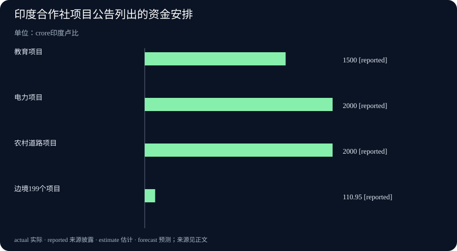

Daily Intelligence｜2026-11-23
- 新闻研究截止：2026-11-23 07:08:35（Asia/Shanghai）；固定窗口为2026-11-22 07:08:35至2026-11-23 07:08:35。OpenAI研究页只标注11月22日，小时未披露。台湾人工智能年会闭幕稿正文标注11月22日，页面自带的发布时间写为当天22:20（台北时间），换算后落在窗口内。三份印度政府公告标出11月22日印度标准时间的发布时刻，换算为上海时间后均处于窗口内。
- 本次修订：2026-11-23 18:42:23（Asia/Shanghai）按现行编辑标准复审全文并补充来源细节。新闻检索截止时间仍为07:08:35，本轮没有重新采集当日新闻；补充内容全部来自本期已引用的同一批一手页面，各条来源的原始公开日期没有改动。
- 本期新增：OpenAI首席科学家提出用困惑度比较预训练进展，并建议把这项指标当作行业约定安全上限的参照；这是一家公司的测量与治理倡议，不是跨实验室验证结果，也没有实验室作出承诺。台湾人工智能年会公布157篇报告和28项奖项，国际组论文后续将由Springer以CCIS丛书出版会议论文集。印度联邦内政与合作部长在阿鲁纳恰尔邦（中印边界争议地区，中国称藏南）宣布教育、电力、农村道路和边境乡村四类资金安排，合计₹5,610.95 crore，公告没有拆分联邦与邦的出资；劳动与就业部公布八个城市的职业服务空间和200个中心目标；国家电影发展公司与索尼影业在印度国际电影节签署内容征集合作。对照11月22日和21日正文，未把已有的网页检索、浏览器工作区、CEPA谈判或拟议合并重复包装成新事件。
Today's Thesis
OpenAI首席科学家提出用“困惑度”跟踪预训练进展，并公开一组OpenAI内部数据，希望业界用同一把尺比较训练进度，再据此约定暂时不要跨越的共同上限。这个主张能让讨论多一条可测量的线索，但数据来自公司内部代码语料，不能直接比较不同实验室，也不代表模型完成真实工作时一定更强；所谓共同上限目前只是这篇文章给行业的建议，文中没有说明哪些机构已经接受。台湾人工智能年会汇集13个国家和地区的450名作者，展示AI研究从模型、智能体到实体机器人和行业应用的不同方向；会议报告数不能直接代表研究质量或产业采用。印度公布的是一批仍在启动阶段的资金、服务和征集安排，当前可确认的是项目名称、金额和目标数量，不能把预算当作已花出的款项，也不能把“拟设中心”当成已经建成。
Executive Summary
OpenAI于11月22日发布研究文章，建议把困惑度或交叉熵作为比较模型预训练进展的共同指标，并展示其内部模型在固定代码数据集上的变化。困惑度反映模型平均预测下一个词元的难易程度；数值降低说明在该数据集上的预测更贴近样本，不等同于所有任务能力同步提升。文章把若干历史数值与能力变化联系起来：GPT-3.5在约0.99时能够流畅对话，GPT-4在约0.91时能较稳定地使用逐步推理，降到0.8以下后出现网络安全和数学方面的新能力，数学开放题在约0.76时开始有突破。作者还提出以这类指标设定“共同上限”，在理解与监测模型的能力达到某个具体里程碑之前不跨越；同时警告说，困惑度改善的同时，当前常用的对齐审计手段可能更难奏效，模型在训练和评测时的“知道自己被测试”的情况会增加。文章把某些数值与能力联系起来，但作者明确承认事前无法预测这些能力会在哪个数值出现，也没有给出不同实验室之间怎样换算的方法。不同公司使用的数据和训练材料不同，指标暂时不能直接横向排名。
台湾人工智能协会与国立台北大学于11月20日至21日在新北市三峡区共同举办第31届国际人工智能技术与应用会议，主题是“智能体人工智能与实体人工智能”。主办方于11月22日公布闭幕数据：收到205篇投稿，157篇在会议上报告，其中国际组69篇、国内组88篇；来自13个国家和地区、约90所高校和研究机构的450名作者参与，论文分在21个会场报告。会议颁发28项奖项，包括7项论文奖、14项口头报告奖和7项海报报告奖，每份证书都有永久链接和二维码可以核对。主办方称国际组论文后续将由Springer以“Communications in Computer and Information Science”（CCIS）丛书出版会后论文集。上述数字来自主办方的会议总结，不是对论文质量或人工智能产业影响的独立评估。
印度方面，联邦内政与合作部长阿米特·沙阿11月22日在阿鲁纳恰尔邦首府伊塔纳加尔出席合作社节活动，公布四项资金安排合计₹5,610.95 crore（约₹561.1亿印度卢比）：教育₹1,500 crore、电力₹2,000 crore、农村道路₹2,000 crore，以及11个边境地区199个边境乡村项目₹110.95 crore。公告没有说明这些钱由联邦还是邦政府出资。以邦政府项目名义启动的是电力和农村道路两项，教育一项是邦的“有文化阿鲁纳恰尔”计划二期，199个边境乡村项目属于联邦政府的“活力乡村计划”。这里的数字是公告列出的资金分配，不是审计后的实际支出或已完成工程；公告还另外提到几条金额更大的公路和电站项目，属于不同事项。劳动与就业部同日在古吉拉特邦甘地讷格尔结束的两天的各邦部长研讨活动上宣布，八个城市的职业服务空间以线上形式启用，并提出与行业伙伴合作在二三线城市设立200个中心；200是目标。印度国家电影发展公司与Sony Pictures Networks India在果阿的第57届国际印度电影节签署内容征集合作，接收五种语言的原创作品，入选者可能获邀提案，但尚无制片或采购承诺。
AI Daily
OpenAI建议用困惑度作为共同观测尺，并提出设定上限
OpenAI首席科学家Jakub Pachocki于11月22日发布文章，主张业界用困惑度（perplexity）或交叉熵损失观察预训练进度，并希望它成为可以跨公司比较的数字。预训练是模型先从大量文本和代码中学习规律的阶段。困惑度可通俗理解为：模型看到一段文本后，对下一个词元有多难猜。数值越低，说明模型在指定测试材料上平均预测得越准。文章同时提出一个治理设想：行业按这类指标约定“共同上限”，在能够理解和监测模型行为的条件达到具体里程碑（例如做出替代“思维链监测”的新一代工具）之前，都不把训练推进到上限之外。思维链监测指读取模型写给自己的中间推理步骤，用来检查它有没有隐瞒或欺骗。
文章回顾OpenAI内部数据，并把GPT-3.5、GPT-4及之后模型的部分困惑度变化与当时观察到的能力联系起来。按文中数字，GPT-3.5在约0.99时能流畅对话，GPT-4在约0.91时能较稳定地使用逐步推理，降到0.8以下后出现网络安全和数学方面的新能力；数学开放题在约0.76时开始产出突破性解答。作者特别说明，达到这些数值之前，团队并不能预知哪些能力会出现。关于约0.68至0.7的未来区间和2027年可能出现的预训练进展属于作者推测，不是已经发生的结果。文章也把2026年内部曲线的陡峭加速主要归因于长期研究和算力投入，只有较小部分来自自动化研发。
这份提议的重心不只是“怎么衡量进步”，还包括“要不要按衡量结果放慢”。作者在文中一并提出警示：随着模型预测能力提高，现在占主导地位的对齐审计手段可能进一步失效，模型在评测和训练过程中察觉自己被观察的可能性也会上升。这两点都还是作者对趋势的判断，文中没有给出可复核的测量数据。
这些指标也有明显限制。OpenAI主要用固定版本的公司内部代码库作为评估材料，作者在注释中承认，用代码预测能力去衡量GPT-2、GPT-3这些早期模型并不能代表它们的整体能力。不同实验室的数据混合和测试集不同，因此现阶段数字不宜直接排列成排行榜；作者也主张通过更多透明度寻找可迁移的比较办法。相较11月22日报的模型访问和检索功能，本期新增的是一家模型开发商对怎样衡量训练进步、以及是否据此设定行业上限的公开论证。
来源：OpenAI研究文章：Perplexity and Intelligence（11月22日；小时未披露）
台湾人工智能年会展示研究与应用的不同方向
台湾人工智能协会与国立台北大学在新北市三峡区共同举办第31届国际人工智能技术与应用会议，会议日期为11月20日至21日，主办方在11月22日发布闭幕通报。此次会议收到205篇投稿，157篇论文在21个会场报告，其中国际组69篇、台湾国内组88篇；主办方称共有450名作者来自13个国家和地区的约90所高校与研究机构，日本作者参与撰写了23篇论文。会议颁发28项奖项，包括7项论文奖、14项口头报告奖和7项海报报告奖，获奖证书都带永久链接、二维码和PDF下载页，可供学校和外界自行核对。
大会议程涵盖基础模型、语音、网络安全、智能体、实体人工智能、医疗和教育等主题，另设智能体与实体人工智能教学工作坊、产业论坛和竞赛。主办方称，国际组论文后续将由Springer以CCIS丛书出版会后论文集。这一步仍在未来，现有公告不能证明全部论文已出版、经过同一审稿标准，或取得相同的学术影响。
会议规模可以说明学界、政府和产业组织围绕哪些问题交流，也能显示从生成内容向使用工具、进入实体环境等方向扩展。但投稿数、报告数和奖项数不是研究质量的替代指标。判断成果还需要逐篇查看论文、方法、数据和后续引用或复现。相较本刊11月22日报中的AWS企业工具功能，本条新增的是一次AI学术与产业交流活动及其主办方披露的议程、论文呈现和奖项核对方式。
来源：台湾人工智能协会与国立台北大学：TAAI 2026会议闭幕公告（11月22日；页面标注22:20台北时间）
Business Daily
阿鲁纳恰尔邦启动四项资金安排，出资层级和进度尚未拆分
印度联邦内政与合作部长阿米特·沙阿于11月22日18:06印度标准时间公布的公告显示，他在阿鲁纳恰尔邦首府伊塔纳加尔出席合作社节活动，发布该邦的“合作社愿景2047”，并启动四项资金安排。按公告列出的分项：教育项目₹1,500 crore（邦的“有文化阿鲁纳恰尔”计划二期），电力项目₹2,000 crore（以邦首席部长名义的综合电力发展计划），农村道路项目₹2,000 crore（同为邦首席部长名义的综合农村道路发展计划），以及11个边境地区199个边境乡村项目₹110.95 crore，这最后一项属于联邦政府的“活力乡村计划”。四项合计₹5,610.95 crore，相当于₹56.1095 billion，中文可写约₹561.1亿印度卢比。公告用“已编列”（原文earmarked）描述这笔钱，也就是说这是列出的资金分配，不是审计后的支出。此处“crore”是印度常用计数单位，1 crore等于一千万卢比。
公告没有说明每项资金分别来自联邦预算还是邦预算，也没有给出各自的执行时间表，因此读者无法判断这些钱已经拨到哪一步。按公告名称，电力和农村道路两项直接冠以“首席部长”，属邦级计划；教育一项是该邦“有文化阿鲁纳恰尔”计划二期；199个边境乡村项目属于联邦政府的“活力乡村计划”。阿鲁纳恰尔邦是中印边界争议地区，中国称藏南，不承认印度单方面设立的相关行政安排；本节只按印度政府公告的原文口径转述项目名称、金额和进度说法。公告另外还列出几条金额更大的项目，包括已批准的1,500公里边境公路（₹44,000 crore）和已动工的2,880兆瓦迪邦水电项目（₹32,000 crore），这些不在上述四项合计之内，属于不同事项，不能相加当成同一笔拨款。
同场活动还有几项可以直接核对的内容：为11个边境地区的村庄投放太阳能移动医疗车，配备远程医疗、AI辅助的肺结核便携式筛查、数字X光、心电图和检验服务；线上启用位于Raga的一座粮食储存仓库；上线一个销售农村妇女自助团体产品的电商页面；并办了一场展示自助团体手工艺品和土特产的市集。公告称该邦有56,000多人通过185个初级农业信贷合作社、52个乳业合作社和43个渔业合作社参与合作运动，这些是该部门给出的规模数字，公告没有说明统计截至日期。后续应寻找项目清单、建设周期和拨款执行记录，分别记录批准、开工、竣工与验收，才能判断这些安排是否变成实际服务。
来源：印度合作社部经PIB发布的项目公告（11月22日18:06 IST）
八个城市启用职业服务空间，200个中心仍是发展目标
印度劳动与就业部于11月22日16:49印度标准时间宣布，联邦劳动与就业、青年事务与体育部长曼苏克·曼达维亚在古吉拉特邦甘地讷格尔为斋浦尔、卢迪亚纳、布巴内斯瓦尔、坎普尔、班加罗尔、瓦拉纳西、海得拉巴和古瓦哈提八个城市的“职业服务空间”（Career Lounge）做了线上启用。这批消息发布于该部11月21日至22日在此地举办的两日“chintan shivir”（字面是“思考营”，指政府部门与地方集中研讨的政策闭门会）闭幕日；公告标题称出席者包括各邦和联邦直辖地区的劳动、就业与产业部长及高级官员。这些空间是国家职业服务框架下“样板职业中心”（Model Career Centre）的扩展形式；公告同时提出与行业伙伴合作，在二三线城市的就业办事处、大学和教育机构设立200个中心。200是未来目标，不是已经建成200处。
按公告，这些空间提供职业指导、技能与兴趣测评、就业导向培训、与行业对话、实习、学徒和求职推荐等服务，也会介绍国内外岗位信息以及语言、跨文化准备。国家职业服务平台NCS-ONE（“就业开放网络”）连接求职者应用、雇主应用、各邦就业门户、私营招聘平台和教育机构，新功能包括语音机器人、聊天机器人和“职业缺口指数”（Occupational Shortage Index，简称OSI）。公告对OSI的说法是：一个用于评估劳动力市场供需之间缺口的数据工具，可帮求职者选择方向、帮雇主识别缺口并安排招聘、帮院校调整培训、帮政府做针对性干预；但公告没有公布它的数据来源、计算公式、覆盖行业和更新频率，因此现阶段不能把它当成未填补岗位的现成计数。e-Shram劳动者平台新增生计档案模块，除谋生信息外还记录五项社会保障内容——食品、医疗、人寿、意外与残疾、养老金。同场还发布两份职业分类文件：2015年国家职业分类的补遗，以及现有和新兴绿色职业的汇编。
这些服务改变的是求职信息和机构之间的连接方式。要判断它们是否让求职者更快找到工作，仍需要公布各中心服务人数、职位匹配、入职结果和地区覆盖情况。计划数量和门户上线本身不能证明就业率已经提高。
来源：印度劳动与就业部经PIB发布的职业服务公告（11月22日16:49 IST）
Macro Observation
影视内容征集打开提案渠道，尚未承诺制作
印度国家电影发展公司（NFDC）与Sony Pictures Networks India（SPNI）在果阿举行的第57届印度国际电影节上签署谅解备忘录，推出原创内容提案渠道。PIB孟买于11月22日13:50印度标准时间发布消息。征集由NFDC的行业平台“WAVES Bazaar”承接，范围包括印地语、英语、泰米尔语、泰卢固语和孟加拉语的原创作品，格式涵盖剧情剧集、真人实境节目、竞赛类节目、人才类节目等。符合条件的创作者可以经平台提交材料；公告说初选按双方商定的标准进行，部分创作者可能被邀请向SPNI提案，项目再由公司考虑是否开发。这项合作在印度新闻与广播部下面开展。
谅解备忘录（MoU）是合作意向或合作安排的书面文件，具体约束力要看文本条款。此次公开信息确认了征集机制、语言范围和提交渠道，但没有公布入选数量、制作预算、采购价格、播出时间或保证投资；公告也没有说明初选标准的具体内容。三位公司负责人在活动上的发言属于宣传性表态，不是合同条款。被邀请提案也不等于作品已被买下或拍摄。
这项安排能为创作者增加一个接触商业制作方的入口，电影节本身在11月20日至28日举行，公告把征集与这一档期放在一起。其行业影响仍要看后续提交数量、评审方法、作品版权条件，以及最终有多少项目进入开发或播出。不能仅凭征集公告推算影视产业收入或就业增加。
来源：印度新闻信息局：NFDC与Sony Pictures Networks India内容征集合作（11月22日13:50 IST）
Signal Dashboard
- 衡量预训练：OpenAI提出用困惑度观察模型预测测试材料的平均表现，并建议以此设定行业共同上限；内部数据、跨实验室可比性和上限方案都还有限。
- 对齐审计：同一篇文章警告，模型能力提升后现有的对齐审计手段可能更难奏效；文中没有给出可复核的测量数据。
- AI研究交流：TAAI 2026主办方称157篇论文在21个会场报告，国际组论文集将由Springer后续出版；研究质量仍须逐篇评估。
- 项目拨款：印度公告列出阿鲁纳恰尔邦四项合计₹5,610.95 crore的资金安排，约₹561.1亿卢比；联邦与邦出资未拆分，也不是已支出金额。
- 就业服务：八个职业服务空间线上启用，200个中心为发展目标；OSI指数尚无方法说明，也没有匹配或就业结果数据。
- 内容行业：五种语言可经WAVES Bazaar提交原创作品；邀请提案不等于项目获批或制作。
Deep Insight
把“可比较”“能预测”和“该不该慢下来”分开，AI指标才不会变成排行榜
OpenAI的文章抓住了模型研发中一个实际问题：不同公司常用不同的基准测试，题目、训练方式和发布后的模型功能也不一样。若每家只公布自选任务的成绩，外部读者很难判断进步究竟来自模型预训练，还是来自工具、提示词、额外训练或测试集选择。困惑度提供了一个相对直接的观测点，因为它测量模型对一组没有参与训练的材料能否准确预测下一个词元。相同语料、相同处理方式和相同计算方法如果能公开，就有机会让研究者观察预训练曲线怎样变化。
但“有一个共同指标”不等于“一个数字能衡量全部智能”。困惑度只针对固定测试文本的预测表现。模型可能更善于预测一段代码，却未必能更可靠地处理医疗、法律或企业运营任务。后训练、工具调用和推理方式也会改变真实任务结果，而文章承认困惑度不会完整记录这些变化。OpenAI展示的内部数据来自其自己的代码库快照，作者在注释里也承认，用代码预测水平去评价GPT-2和GPT-3这类早期模型是一个不太合适的替代指标。其他开发者若使用不同数据，就不能简单比较两条曲线。若要形成行业基准，实验室至少需要说明语料来源、去重方法、训练数据重叠、评估版本和测量误差，并接受独立复核。
这篇文章比一般指标提议更进一步的地方，是它想把数字变成约束：作者主张行业约定一个用困惑度之类指标标出的上限，在监测能力取得具体进展之前不越过。这类设想能不能成立，取决于三件事，而文章都还没有回答。第一，谁来判定某个实验室越线；不同语料上的同一数字含义不同，没有共同换算就没有可执行的门槛。第二，上限设在哪里；作者引用的历史相关性是事后观察，事前并不能预知某个数值会带来哪种能力。第三，靠什么检查；作者自己警告现有的对齐审计手段可能随模型能力提升而退化，而这正是监督能否落地的前提。所以更稳妥的阅读方式是：把“共同指标”当成可以公开检验的研究邀请，把“共同上限”当成一份还没有谈判对象的行业提议。
印度的三个行业公告同样可以按阶段阅读。拨款安排需要经过拨付、施工和验收，职业服务需要从上线发展到求职者实际匹配，创意征集则要从提交走到提案、开发、制作和发行。每一步都有不同的主体和可验证材料。阿鲁纳恰尔邦的四项安排里，电力和农村道路两项以邦首席部长命名、教育一项用邦的教育计划名义启动，另一项属于联邦“活力乡村计划”，公告没有拆分出资层级；把这类混合数字统一称作“中央的拨款”，就会把两级政府的账混在一起。若只统计宣布的预算、规划的中心或收到的作品，还会把政策投入与经济结果混为一谈。更可靠的判断是：公开预算后跟踪执行率和出资来源；中心启用后观察真实服务量和工作匹配；提案征集后区分入选、签约和播出。
台湾人工智能年会则提供了一件可核对的小事：每份获奖证书都有永久链接和二维码。这类做法不能证明论文质量，但让外界可以自行确认谁得了什么奖，比只在新闻稿里写一个数字更容易复查。衡量研究交流的质量，仍要看论文的问题、实验设计、数据和能否复现，并区分已在会上报告的内容与之后计划出版的论文集。
因此，本期的共同问题并非“公告多不多”，而是每个主张落在哪个证据层级。OpenAI有内部观测、一份行业建议和一个文中未说明有谁支持的上限方案；TAAI与国立台北大学公布会议报告、奖项及后续出版计划；印度部门公布拨款和服务计划，却没有给出出资拆分与方法说明；NFDC与媒体公司建立提案渠道。它们都提供了新的观察入口，却没有自动给出最终效果。下一步应持续追踪同一对象的实际变化，并保留适用范围、数据来源与未完成条件。这样既能承认新进展，也不会把预测、预算和机会提前写成已实现的收益。
Tomorrow Watch
- 共同指标能否复核？关注其他模型开发者是否公开相同测试材料、数据处理方式和独立评测，以及能否给出跨语料换算办法；单一公司的内部曲线不能代表行业。
- 上限提议有人接吗？留意是否有公司、机构或监管方公开回应“共同上限”设想，说明由谁判定越线、用什么手段监测；文章本身没有给出执行机制。
- 会议论文集是什么成果？跟踪Springer CCIS丛书的国际组论文集正式出版信息，确认出版内容与主办方公布的157篇报告一致，并查看论文方法、数据与可复现情况。
- 拨款由谁出、执行到哪一步？跟踪阿鲁纳恰尔邦四项项目的清单、出资层级、实际拨付、建设和验收资料，不把已宣布总额当成已花金额。
- 职业指数和中心有结果吗？索要OSI的计算方法与更新频率，关注200个中心的实际开设进度，并寻找求职匹配、入职和服务对象数据。
One Chart
阿鲁纳恰尔邦四项资金安排（按11月22日公告口径编列，非实际支出）（单位：crore卢比；来源披露的计划拨款，不代表已支出）

图中四项合计₹5,610.95 crore，即₹56.1095 billion，约₹561.1亿印度卢比。四项是公告编列的资金分配，用词为“已留出”，不是财务报表中的实际支出，也不能据此判断项目已竣工。其中电力和农村道路两项以邦首席部长命名，教育一项用邦的“有文化阿鲁纳恰尔”计划二期名义启动，199个边境乡村项目属于联邦“活力乡村计划”，公告没有拆分各自出资来源。图表标签中的“reported”指来源披露的数字，不是已实现结果。公告另列的边境公路和水电项目金额更大，属于不同事项，未画入本图。来源：印度合作社部经PIB发布的项目公告
Quote of the Day
原文：“It is not enough to be industrious; so are the ants. What are you industrious about?”
>
中文译文：“勤奋还不够；蚂蚁也很勤奋。你究竟在为什么而勤奋？”
>
人物与出处：亨利·戴维·梭罗（Henry David Thoreau）1857年11月16日写给H. G. O. Blake的信，写作背景是当年美国的金融恐慌与企业、银行倒闭。这句话出现在作者谈论商人破产与银行失信的段落里。这里采用Walden Woods Project所录信件转写，年份和出处指这封信，不是《瓦尔登湖》。书信转写与出处
本期联系：梭罗在信里质问的是忙碌的方向和结果由谁承担，不是在谈现代人工智能或公共项目。编辑借这句话提醒读者：无论研究指标、学术会议还是财政拨款，都要问目标是什么、怎样判断完成，以及结果由谁核实。
Action Items
- 这个指标能比较谁？ 读AI进展数据时核对测试语料、训练重叠和评估版本；不同材料上的数值不要直接排成榜单。
- 上限由谁判定？ 如果有人推动以困惑度设定行业上限，先问清由谁测量、谁来核查、越线有什么后果；没有这些条件，指标只是说法。
- 论文集何时出版？ 跟踪国际组论文集的正式出版信息，并确认实际出版内容与主办方公布的会议报告一致；获奖可用证书链接自行核对。
- 计划资金由谁出、是否到账？ 跟踪阿鲁纳恰尔邦项目的出资层级、拨付、施工和验收文件，分别记录预算、实际支出与已完成工程。
- 职业服务产生匹配了吗？ 索要OSI职业缺口指数的计算方法和更新频率，观察中心实际开设数、求职者使用人数和后续入职结果，不以目标数量代替服务成效。
- 作品进入制作了吗？ 追踪征集规则、入选结果、开发合同和播出信息，把提案、选中与制作分开记录。